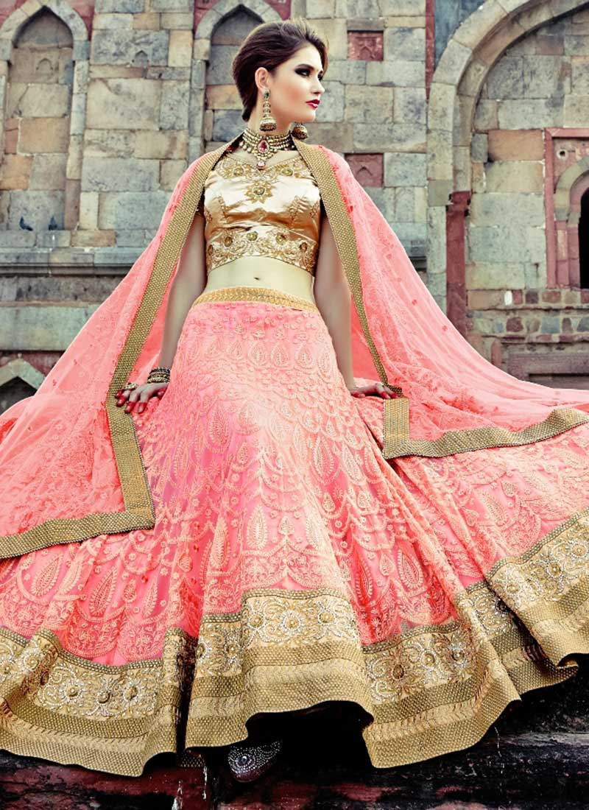
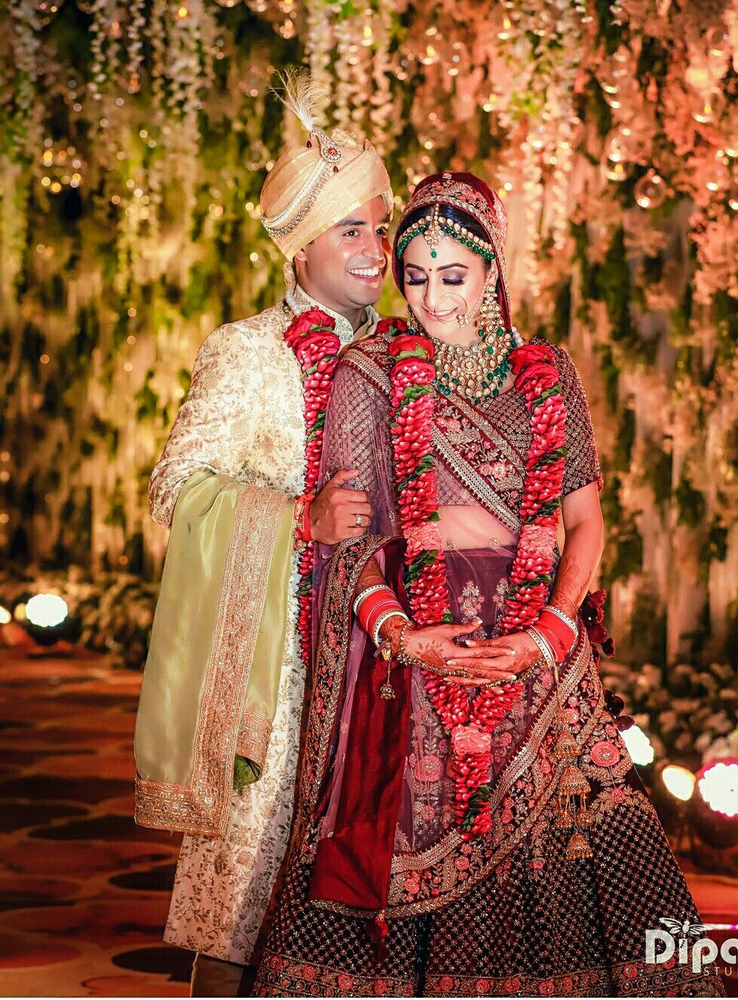
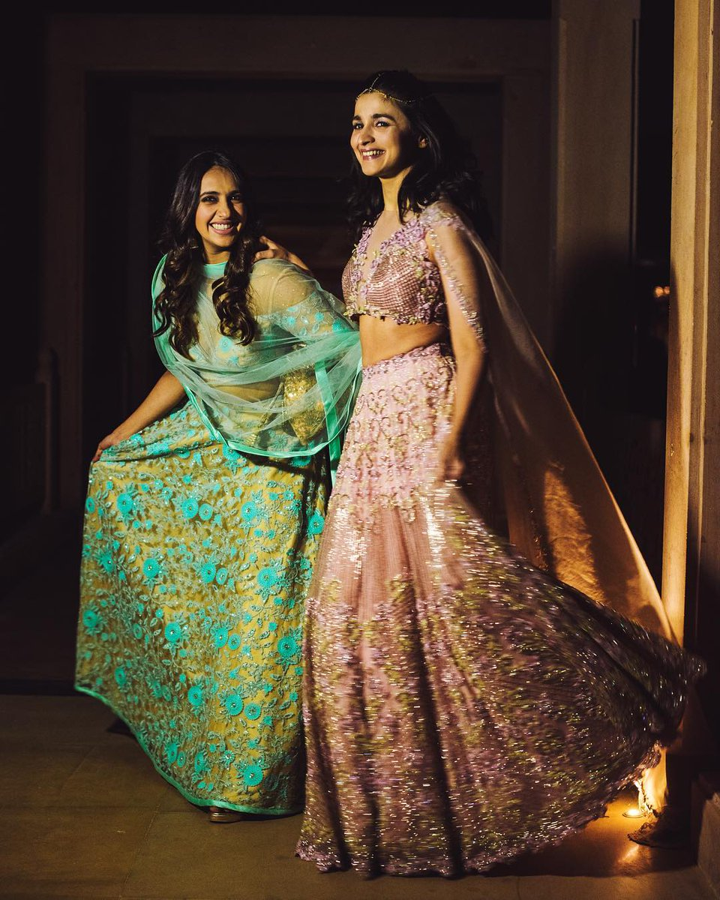
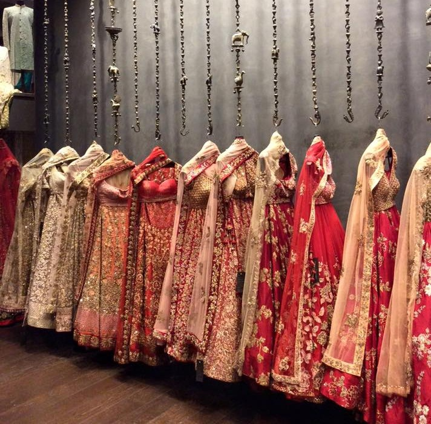

5 CRAZY BENIFITS OF RENTING
Have you ever been stressed about the 'THE EVENT' OUTFIT? Have you ever been broke and a special event is upcoming leaving you all stressed out about how you'll manage with the expenses? Are you thinking of wearing the same outfit you did last time half-heartedly? Are you that experimental soul like Ranveer Singh but are not sure if the expenses you'll make will be worth the money? You choose to repeat the clothes because you consider buying a new one a total waste of money? Do you think your wardrobe is filled with so many necessary clothes and you have nothing to wear? Don't have time to buy a new one and wait for it to get stitched and the event is in a few days?
Rent An Attire is here for your rescue, no more thinking about hurting your pockets or fear of being mocked at. Rental clothing opens the gateway and leaves you between hundreds of options for you to choose from. You must have been aware of it, but you don't choose it over purchasing but there are 5 crazy benefits of choosing to rent clothes over holding the ownership of clothes.
1. Pocket- friendly
Spending on something that you will not prefer wearing again is like throwing your money in the trash bin because it is as inappropriate as that. Let's keep it real that if you are thinking of buying a Sherwani for your wedding will you ever think of wearing it again in any event, so it's better to rent it and adding more plus points is that the rental clothing service provider will charge you for at a very nominal price with all the fittings and dry-cleaning done. Like designer wear, get it rented at pocket-friendly prices.
2. No fear of repetition
Don't like repeating clothes at other events? Fear that people will judge you for repeating it over and over? Don't have clothes which are trending or having a tough time to buy a new one? Chill, Rent An Attire is here with its services where we can rent the latest outfits, designer wears at the fraction of the actual amount. If you buy designer wear you will hear this taunt all your life that "Aur le itna expensive, ab paise vasool hone tak pehen", but we are here to protect you from this with the smart renting facility.

3. No fear after booking
We live in a fast world where we are so caught up with something or the other that we hardly give time to others, not even to our own selves. And talking about the 'Shaadi wala ghar' people hardly have time to go shopping and spend hours as many other arrangements are also piled up so all you have to do is select your outfit, do the booking and the payment, mention the measurements and you are a free bird as the companies will be responsible for the alternations to be done and the dry-cleaning. So, you can focus on other arrangements and enjoy with your family.
4. Time- saver
Talking about events, all we remember are the number of arrangements we have to do and what we have done. We are so busy with other things that we consider going for shopping a waste of time at that time when the event is almost there and when we get the time we think it will take time to go to the shop, choose the cloth, purchase it and get it stitched as it will hamper other work. But these services have made things simpler for you by saving your time and are a one-point stop which helps you to get things done at once.

5. Guilt- free experimenting
Are you the real- life Ranveer Singh, who loves experimenting with clothes and your looks? But fear investing money in buying it that what if it didn't suit you, you have to keep that piece with you all your life, but rental clothes are the genie you really need. If you love experimenting and want the demo of the look you want without spending huge bucks on it go for these services, try and decide.
